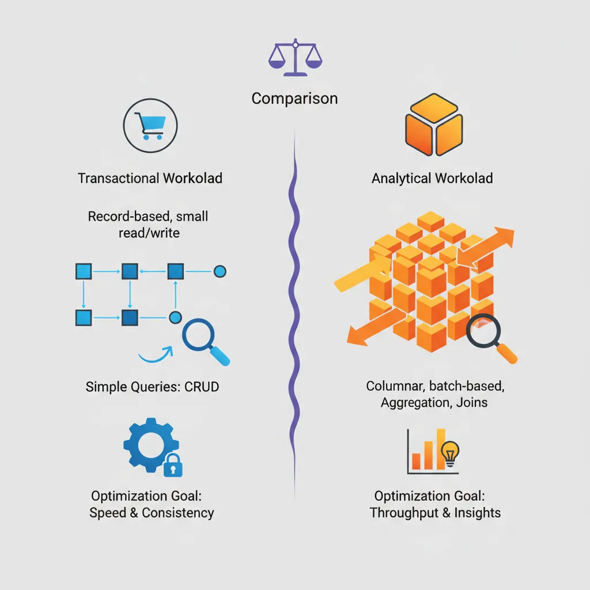
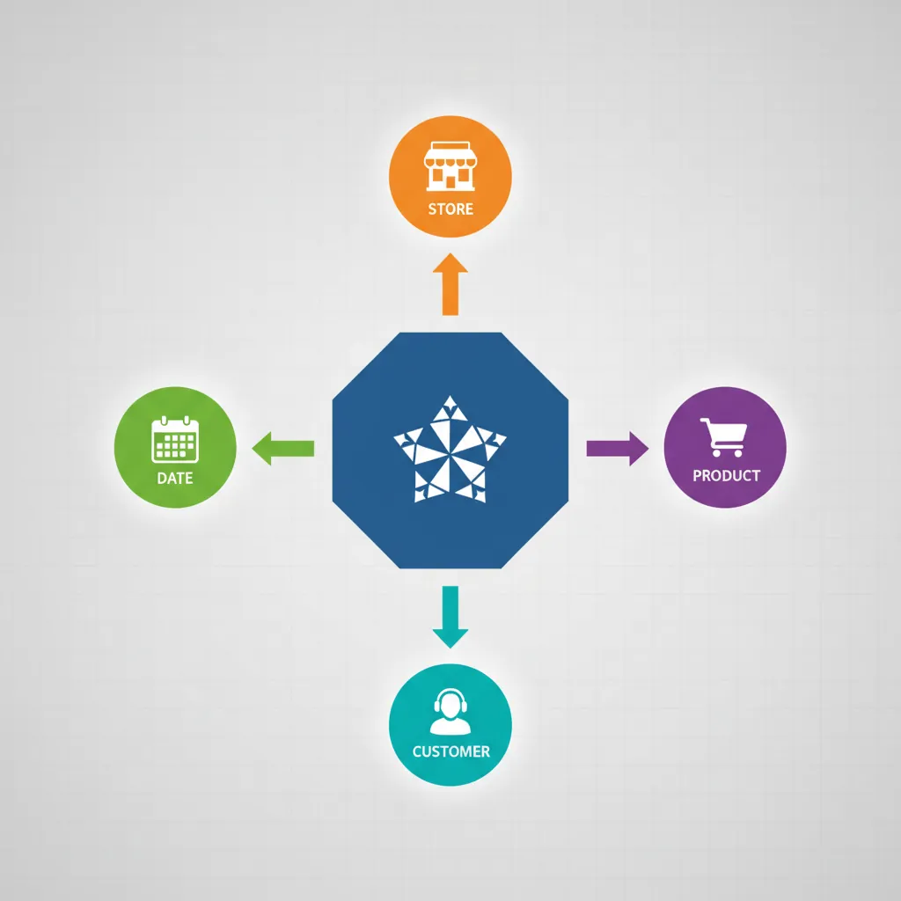
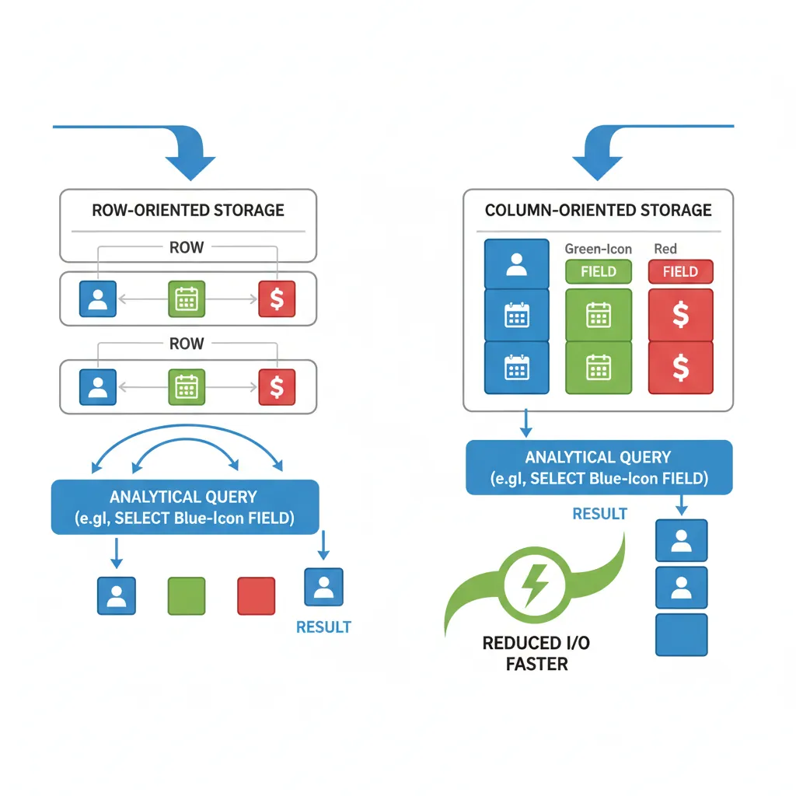
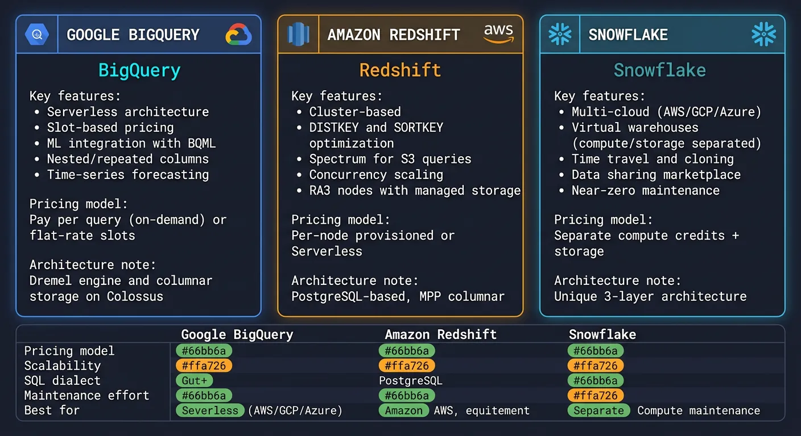
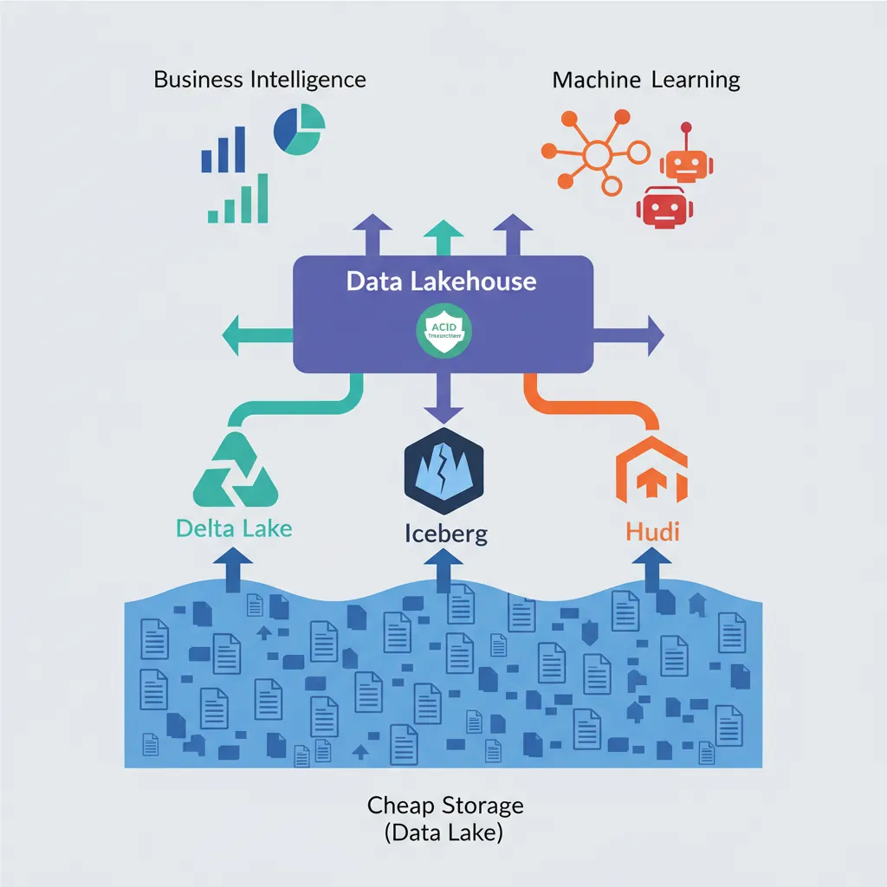

We use cookies to enhance your browsing experience, serve personalized content, and analyze our traffic.
By clicking "Accept All", you consent to our use of cookies. See our
Privacy Policy
for more information.
Complete Database Mastery Part 14: Data Warehousing & Analytics
January 31, 2026Wasil Zafar42 min read
Master data warehousing and analytics. Learn OLTP vs OLAP, star and snowflake schemas, columnar databases, ETL pipelines, BigQuery, Redshift, Snowflake, and analytics best practices.
Data warehousing transforms raw operational data into actionable business intelligence. Understanding the differences between transactional (OLTP) and analytical (OLAP) workloads is fundamental to designing effective analytics systems.

OLTP vs OLAP — comparing transactional and analytical workload characteristics, query patterns, and optimization goals
Series Context: This is Part 14 of 15 in the Complete Database Mastery series. We're exploring the world of analytics and business intelligence.
Think of OLTP (Online Transaction Processing) as the cash register at a store—fast, frequent, small transactions. OLAP (Online Analytical Processing) is the quarterly sales analysis—complex queries across millions of records.
OLTP vs OLAP Comparison
Characteristic
OLTP
OLAP
Purpose
Day-to-day operations
Historical analysis
Queries
Simple, focused
Complex, aggregations
Data Volume
Current data (GB)
Historical data (TB-PB)
Schema
Normalized (3NF)
Denormalized (Star/Snowflake)
Users
Many concurrent users
Fewer analysts/BI tools
Response Time
Milliseconds
Seconds to minutes
Dimensional Modeling
Dimensional modeling organizes data for analytical queries, optimizing for readability and query performance rather than normalization.

Star schema design — central fact table surrounded by date, product, store, and customer dimension tables
Star Schema
The star schema places a central fact table surrounded by dimension tables—like a star. It's the most common data warehouse design.
The snowflake schema normalizes dimension tables further, reducing redundancy but adding joins.
-- Snowflake: Product dimension normalized
CREATE TABLE dim_product (
product_key INT PRIMARY KEY,
product_name VARCHAR(100),
subcategory_key INT REFERENCES dim_subcategory(subcategory_key),
brand_key INT REFERENCES dim_brand(brand_key)
);
CREATE TABLE dim_subcategory (
subcategory_key INT PRIMARY KEY,
subcategory_name VARCHAR(50),
category_key INT REFERENCES dim_category(category_key)
);
CREATE TABLE dim_category (
category_key INT PRIMARY KEY,
category_name VARCHAR(50)
);
Facts & Dimensions
Key Concepts:
Facts = numeric measures you analyze (sales, quantity, revenue)
Dimensions = context for analysis (who, what, when, where)
Surrogate Keys = auto-generated keys (product_key) vs natural keys (product_id)
Slowly Changing Dimensions (SCD) = handling historical changes in dimensions
-- SCD Type 2: Keep full history
CREATE TABLE dim_customer (
customer_key INT PRIMARY KEY,
customer_id VARCHAR(20), -- Natural key
name VARCHAR(100),
city VARCHAR(50),
state VARCHAR(50),
-- SCD Type 2 tracking
effective_date DATE,
end_date DATE,
is_current BOOLEAN
);
-- When customer moves:
-- 1. Update current record: end_date = yesterday, is_current = false
-- 2. Insert new record: effective_date = today, is_current = true
Columnar Databases
Column-Oriented Architecture
Traditional row-based databases store entire rows together. Columnar databases store each column separately, dramatically improving analytical query performance.

Columnar vs row storage — how column-oriented layout reduces I/O for analytical queries scanning specific fields
Row-Based Storage:
Row 1: [Alice, 28, NYC, Engineer]
Row 2: [Bob, 35, LA, Manager]
Row 3: [Carol, 42, CHI, Director]
Column-Based Storage:
Names: [Alice, Bob, Carol]
Ages: [28, 35, 42]
Cities: [NYC, LA, CHI]
Titles: [Engineer, Manager, Director]
-- Analytical query: SELECT AVG(age) FROM employees
-- Row-based: Must read ALL columns for ALL rows
-- Columnar: Only reads the 'age' column - much less I/O!
Compression Techniques
Columnar storage enables excellent compression because similar data is stored together.
flowchart LR
subgraph ETL ["ETL Traditional"]
direction LR
S1["Sources"] --> E1["Extract"]
E1 --> T1["Transform
External Server"]
T1 --> L1["Load"]
L1 --> W1["Warehouse"]
end
subgraph ELT ["ELT Modern"]
direction LR
S2["Sources"] --> E2["Extract"]
E2 --> L2["Load"]
L2 --> W2["Warehouse"]
W2 --> T2["Transform
Inside Warehouse"]
end
style ETL fill:#f0f4f8,stroke:#16476A
style ELT fill:#e8f4f4,stroke:#3B9797
Popular ETL/ELT Tools
# dbt (data build tool) - Modern ELT transformation
# models/sales_summary.sql
# {{config(materialized='table')}}
SELECT
d.year,
d.month_name,
p.category,
SUM(f.total_amount) as total_sales,
COUNT(DISTINCT f.customer_key) as unique_customers
FROM {{ ref('fact_sales') }} f
JOIN {{ ref('dim_date') }} d ON f.date_key = d.date_key
JOIN {{ ref('dim_product') }} p ON f.product_key = p.product_key
GROUP BY d.year, d.month_name, p.category
# Apache Airflow DAG for ETL pipeline
from airflow import DAG
from airflow.operators.python import PythonOperator
from datetime import datetime
dag = DAG(
'sales_etl',
schedule_interval='@daily',
start_date=datetime(2024, 1, 1)
)
def extract():
# Extract from source systems
pass
def transform():
# Clean and transform data
pass
def load():
# Load into warehouse
pass
extract_task = PythonOperator(
task_id='extract',
python_callable=extract,
dag=dag
)
transform_task = PythonOperator(
task_id='transform',
python_callable=transform,
dag=dag
)
load_task = PythonOperator(
task_id='load',
python_callable=load,
dag=dag
)
extract_task >> transform_task >> load_task
Modern Analytics Platforms
Google BigQuery
-- BigQuery: Serverless, pay-per-query
SELECT
DATE_TRUNC(order_date, MONTH) as month,
product_category,
SUM(total_amount) as revenue,
COUNT(*) as orders
FROM `project.dataset.orders`
WHERE order_date >= '2024-01-01'
GROUP BY 1, 2
ORDER BY 1, revenue DESC;
-- BigQuery ML: Machine learning in SQL
CREATE OR REPLACE MODEL `project.dataset.sales_forecast`
OPTIONS(
model_type='ARIMA_PLUS',
time_series_timestamp_col='date',
time_series_data_col='revenue'
) AS
SELECT date, SUM(total_amount) as revenue
FROM `project.dataset.orders`
GROUP BY date;

Modern analytics platforms — BigQuery, Redshift, and Snowflake feature comparison for cloud data warehousing
Amazon Redshift
-- Redshift: Distribution and sort keys
CREATE TABLE fact_sales (
sale_id BIGINT IDENTITY(1,1),
date_key INT,
product_key INT,
store_key INT,
quantity INT,
total_amount DECIMAL(12,2)
)
DISTKEY(product_key) -- Distribute by product for JOINs
SORTKEY(date_key); -- Sort by date for range queries
-- Redshift Spectrum: Query S3 directly
CREATE EXTERNAL SCHEMA s3_data
FROM DATA CATALOG
DATABASE 'external_db'
IAM_ROLE 'arn:aws:iam::123456789:role/RedshiftS3';
SELECT * FROM s3_data.parquet_table;
Snowflake
-- Snowflake: Virtual warehouses for compute scaling
CREATE WAREHOUSE analytics_wh
WITH WAREHOUSE_SIZE = 'LARGE'
AUTO_SUSPEND = 300
AUTO_RESUME = TRUE;
-- Zero-copy cloning for dev/test
CREATE DATABASE analytics_dev CLONE analytics_prod;
-- Time travel: Query historical data
SELECT * FROM orders
AT (TIMESTAMP => '2024-01-15 10:00:00'::TIMESTAMP);
-- Snowflake Streams: CDC for incremental processing
CREATE STREAM orders_changes ON TABLE orders;
SELECT * FROM orders_changes; -- Only changed rows
Analytics Query Optimization
-- Partitioning: Reduce data scanned
-- BigQuery partition by date
CREATE TABLE sales_partitioned
PARTITION BY DATE(order_date)
CLUSTER BY product_category
AS SELECT * FROM raw_sales;
-- Query only needed partitions
SELECT SUM(amount)
FROM sales_partitioned
WHERE order_date BETWEEN '2024-01-01' AND '2024-01-31';
-- Only scans January partition!
-- Materialized views for common aggregations
CREATE MATERIALIZED VIEW mv_daily_sales AS
SELECT
order_date,
product_category,
SUM(amount) as total,
COUNT(*) as orders
FROM sales_partitioned
GROUP BY 1, 2;
Analytics Optimization Tips:
Partition by date (most common filter)
Cluster by frequently filtered columns
Use materialized views for dashboards
Avoid SELECT * — only request needed columns
Pre-aggregate where possible (summary tables)
Data Lakehouse Architecture
The Data Lakehouse combines data lake flexibility (store anything cheaply) with data warehouse reliability (ACID, schema enforcement).

Data lakehouse architecture — unifying cheap storage with ACID transactions via Delta Lake, Iceberg, and Hudi
Traditional Architecture:
[Sources] → [Data Lake (cheap storage)] → [Data Warehouse (expensive)]
↓ ↓
ML/Data Science BI/Analytics
(duplicate data)
Lakehouse Architecture:
[Sources] → [Lakehouse (Delta Lake, Iceberg, Hudi)]
↓
Unified: BI + ML + Streaming
(Single source of truth)
# Delta Lake with PySpark
from delta.tables import DeltaTable
from pyspark.sql import SparkSession
spark = SparkSession.builder \
.appName("Lakehouse") \
.config("spark.sql.extensions", "io.delta.sql.DeltaSparkSessionExtension") \
.getOrCreate()
# Create Delta table
df.write.format("delta").save("/data/delta/sales")
# ACID transactions on data lake!
DeltaTable.forPath(spark, "/data/delta/sales") \
.update(
condition="year = 2024",
set={"status": "'archived'"}
)
# Time travel
df_historical = spark.read.format("delta") \
.option("versionAsOf", 5) \
.load("/data/delta/sales")
Conclusion & Next Steps
Data warehousing transforms raw data into business value. Mastering dimensional modeling, columnar storage, and modern analytics platforms enables you to build powerful business intelligence solutions.
Continue the Database Mastery Series
Part 13: Database Security & Governance
Secure your analytics data and comply with regulations.